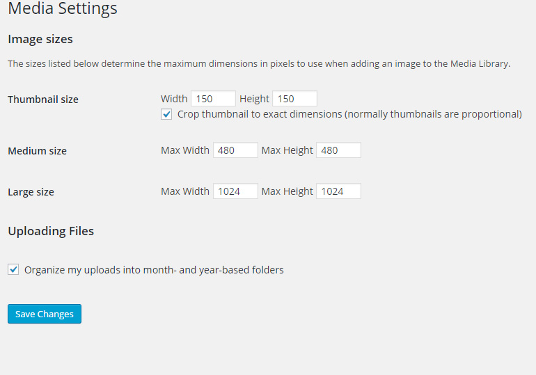

Introduction
Thank you for your purchase!
This documentation will guide you through the setup of TownPress WordPress theme. If you are new to WordPress, it is highly recommended to read through some beginner tutorials first.
If you are already loving TownPress theme, please don't forget to rate it 5* under your downloads section of your profile. Thank you!
Setup
Installation
First step is to install the WordPress. If you need help with that, please read this tutorial
Now, let's install the theme itself. First make sure that you have downloaded full package .zip file from ThemeForest.
- Click on Download button next to purchased item
- Choose All files & documentation and download the zip file. Unzip the file
- Enable email notifications if you want to be informed when the new update is available
- If you like the theme, don't forget to rate it 5* please. Thank you!
When you unzip the downloaded file, you will get bunch of folders. The most important one is the THEME folder.
- THEME folder contains the installable theme .zip.
Now go to wp-admin of your site and let's install the theme.
- Hover over Appearance
- Click on Themes
- Click on Add New
- Click on Upload Theme, choose theme .zip from THEME folder and install it
It is highly recommended to install the child theme as well. Learn more about child themes here. Child theme .zip can be found in Child Theme folder. Install it in the same way as parent theme.
If you have installed both parent and child theme, let's activate the child one under Appearance / Themes.
- Hover over child theme and click on Activate
After activation, you will see a notification about required plugins.
- Click on Begin installing plugins

- Select all plugins
- Click on Bulk Actions selectbox
- Choose Install
- Click on Apply button
Now go to Plugins and activate those new plugins.
- Select new plugins
- Click on Bulk Actions selectbox
- Choose Activate
- Click on Apply button
Installation is complete, but please, read the rest of the documentation as well!
Recommended Settings
The following settings are optional, but highly recommended for this theme to work correctly.
Permalinks
Go to Settings / Permalinks and do the following:
- Click on Post name
- Save your changes
Timezone and Date & Time Settings
It is very important to set all your basic locale settings under Settings / General. It will affect not only date of your posts, but also weather and local time displayed in LSVR Locale Widget.
- Choose your Timezone
- Choose correct Date format
- Choose correct Time format
- Save your changes
Image Sizes
You can change sizes of your images under Settings / Media. These are recommended settings:

This change will affect only new images, if you've already uploaded some images, you can use this plugin to regenerate them.
Demo Data Import
If you want to recreate a demo look ASAP, you may want to import the demo data. Please note that demo images are NOT part of import file (read more).
To import the demo data, go to Theme Options / Demo Importer
- Import Content part and wait until it imports
- Import ThemeOptions part and wait until it imports
- Import Widgets part and wait until it imports
Front Page and Posts Page
Now you need to tell WordPress which page will be used as a front page and which will handle displaying of standard posts. You can do that under Settings / Reading.
- Choose A static page (select below)
- Select your Front page
- Select your Posts page
Menus
This theme supports two menu areas - Main Menu and Footer Menu. You can also create a separate menu for a Directory element.
Main Menu
It can be displayed either in primary (left) sidebar, secondary (right) sidebar or in header. Main menu will be also used for mobile devices.
To create it, navigate to Appearance / Menus, create a new menu, add your pages and then select correct Theme location.
- Select Main Menu
- Save your changes
Now, if you want to display main menu in header, head to Theme Options / Header Settings and enable Header Menu option. That will enable it across all pages, but you can choose to enable it just for a specific ones. To do so, edit a page, scroll down to Page Settings and set Header Menu to Enable. If you don't want to display it in sidebar at the same time, head to Theme Options / Sidebar Settings and set Side Menu Position to Disable.
If you want to display your main menu in sidebar, navigate to Theme Option / Sidebar Settings and set Side Menu Position to either Left (recommended) or Right. You can change this setting separately for any page using its Page Settings.
Footer Menu
Footer menu is displayed in Footer, on the opposite site from Footer Text (which can be edited under Theme Options / Footer Settings / Footer Text). It can be created in the same way as Main Menu (above), you just need to select Footer Menu under Theme locations.
Adding Links to Custom Post Types - CPT (Galleries, Notices, Documents, Events)
If you want to add a link to CPT archive page (for example list of Events), you will have to obtain its link first. Here is where you can find it:
Notices
Theme Options / Notices / Notices URL Slug option description
Documents
Theme Options / Documents / Documents URL Slug option description
Events
Theme Options / Events / Events URL Slug option description
Galleries
Theme Options / Galleries / Galleries URL Slug option description
If you have your desired link, navigate back to Appearance / Menus, choose your menu and insert your link via Custom Links.
- Click on Custom Links
- Add link to URL field
- Add label for this item
- Insert it to your menu
If you want to insert a link to a specific post (for example specific event), you will have to first enable this feature via Screen Options (in top right corner).
- Show Notices
- Show Documents
- Show Events
- Show Galleries
Directory Element
If you want to use a Directory element (as in Home 1) you have to create a regular menu under Appearance / Menus first. Do not check anything under Theme locations. Then navigate to your page with Directory element (e.g. Home 1), edit it and assign this newly created menu to it.
- Hover over Directory element
- Edit this element
- Choose your menu
- Save your changes and save the page
Theme Options
Now it's time to take a look at Theme Options.

There are many different settings and they all should be self-explanatory via their labels or description. You should take your time and browse through all of them to learn about various customization options of this theme.
Quick Reference
{kind=link}
- Header Background. Can be defined under Theme Options / Header Settings with Header Background option. You can override it for a specific page with its Featured Image
- Header Logo. Can be defined under Theme Options / Header Settings with Header Logo option
- Header Map. Can be enabled under Theme Options / Header Settings with Header Google Map (global) option and additional options below. You can enable it just for a specific page under Page Settings of that page
- Header Login. Can be enabled under Theme Options / Forums (bbPress). bbPress plugin have to by installed and active to use this feature. Learn more about bbPress integration here
- Header Search. Can be enabled under Theme Options / Header Settings with Header Search option
- Page Title. This is the standard title of currently displayed page. You can disable or override it under Page Settings / Content of a specific page
- Directory element. Can be inserted into page via Page Builder. Learn how to populate it with items here
- Articles element. Can be inserted into page via Page Builder
- Main Menu. You can learn how to create it here
- Left Sidebar. You can learn more about sidebars here
- LSVR Documents widget. You can learn more about Documents here and about widgets here
- LSVR Locale Info widget. Settings for this widget can be edited under Theme Options / Locale. Learn more about widgets here
- LSVR Featured Gallery widget. You can learn more about Galleries here and about widgets here
- Right Sidebar. You can learn more about sidebars here
- LSVR Notices widget. You can learn more about Notices here and about widgets here
- LSVR Image widget. You can learn more about widgets here
- LSVR Events widget. You can learn more about Events here and about widgets here
- Footer Background. Can be defined under Theme Options / Footer Settings with Footer Background Image option
- Bottom Panel. You can learn more about Bottom Panel here
- Text widget. You can learn more about widgets here
- LSVR Definition List widget. You can learn more about widgets here
- LSVR Mailchimp Subscribe widget. Learn how to obtain a correct link for this widget here. You can learn more about widgets here
- Text widget. You can learn more about widgets here
- Social links. You can define your Social links under Theme Options / Social and enable them in Footer under Theme Options / Footer Settings with Social Icons option
- Footer Text. Can be edited under Theme Options / Footer Settings with Footer Text option
- Footer Menu. You can learn how to create the Footer menu here
Pages
Page Builder
This theme comes with a very powerful page builder - Visual Composer. You may want to read its official knowledge base if you need help using it. If you are already familiar with VC, you will find out that not all default VC elements are available with this theme.
- If you don't see page builder when editing page, click on Backend Editor button. If you don't see this button, read this
Using pre-defined layout templates
As with default VC elements, not all default predefined VC layout templates are supported. But at the other hand, there are bunch of theme-specific ones available.
- Open layout templates modal
- Display predefined templates
- This icon indicates that this is a theme-specific template
Page Settings
Page Settings can be found under main content editor.
For example, if you want to create a page without title and breadcrumbs, with elements as separate boxes, use these settings:
- Switch to Content Settings
- Disable Page Title
- Disable Breadcrumbs
- Set Boxed Content to Separate Boxes
Post Types
Standard Post (News)
Standard posts are the core for each WordPress site. They can be used for blogging or news. First thing to do when you want to use posts is to create a standard page.
- Title will be used on any place where a reference to post list page is needed (page title for post list, page title for single post, breadcrumbs)
- Leave content blank. Even if you add a text here, it won't be displayed anywhere
You can assign sidebars to post pages under Page Settings / Sidebars.
Next step is to choose this page as Posts page under Settings / Reading.
- Choose A static page (select below)
- Select your News page and save your changes
Notices, Events, Documents and Galleries
All these post types can be managed under their respective secton in wp-admin (Notices, Events, Documents, Galleries) in a very similar way to standard posts. LSVR Toolkit (TownPress) plugin must be installed to use them.
First thing to do when you want to use any (or all) of these post types, is to create a separate page for each of them. Let's show it on the Notices, but the process is the same for all other post types, just change word notices for events, galleries and documents.
- Insert title
- Make sure that slug is different from "notices" (for example by adding -base postfix to it)
Now navigate to Theme Options / Notices and choose this page as Notices Base Page.
- Go to Theme Options / Notices
- Choose your Notices page
Slide
Slide is a special post type for use with Slider element. Slides can be managed under Slides in similar way to standard posts. LSVR Toolkit (TownPress) plugin must be installed to use this feature.
Slides can be grouped together via sliders. This works in a same way as categories for standard posts. Then, when you insert a Slider element, you can insert a slug of a specific slider and only slides associated with this slider will be displayed.
Featured Image will be used as slide's background (but you can also define a single background for whole slider when you insert Slider element).
Settings for single slide can be edited under Slide Settings when editing a slide.
Forums (bbPress)
First step to do when you want to run forums on your site is to install bbPress plugin. This plugin is a huge one, so you better read through its documentation if you haven't used it before. I also recommend to install Basic User Avatars plugin, which will allow your forum members to change their profile picture very easily. Next step is to create few pages.
Lost Password page
Create a regular page under Pages / Add New and use Visual Composer to add predefined layout template.
- Show layout templates
- Switch to Default Templates
- Choose #bbPress Lost Password
You can customize this page under Page Settings and then save it.
Login / Register page
Let's create another regular page with different predefined layout template.

- Show layout templates
- Switch to Default Templates
- Choose #bbPress Login / Register
Again, you can customize this page via Page Settings and then save it.
Forums Base page
This page will be used for managing sidebars, title etc. for all your forum pages (except Login / Register and Lost Password). Just create a regular page and make your changes under Page Settings. Make sure that this page will have a different slug from "forums" to avoid any conflicts with default forums URL. For example, you can use "forums-base" slug for it.
Now head to Theme Options / Forums (bbPress) and choose your Base Page under Forums Base Page.
Header Login
If you want to use Header Login button, then nanvigate to Theme Options / Forums (bbPress), enable Enable Header Login option and choose your Login / Register page under Login Page option.
That's all, you can access your forums on your-domain/forums URL. Don't forget to take a look at Settings / Forums for some advanced settings.
Custom Skin
Creating a Custom Skin needs a little bit of work, but follow these steps and you will have it in no time:
- Open this link to a default theme skin .scss file
- Copy all code from that link to any text editor (e.g. Notepad++ for Windows or Brackets for OSX)
- Make your changes. Basically, you just need to change color for $accent variable on line 26. By default, it looks like this:
$accent: #ec5237; // primary accent color
you will find a comprehensive list of colors here. Just change #ec5237 to your custom color. - Copy your changed code and paste it to left column on sassmeister.com (SCSS).
- Copy generated code from right column (CSS)
- Now you have two options:
you can either paste this generated code to library/css/customskin.css file in Child Theme (recommended)
OR paste this code under Theme Options / Styling into Custom Scheme Code field (enable Enable Custom Color Scheme option first) - In both cases, Enable Custom Color Scheme under Theme Options / Styling have to be enabled
Icons
This theme uses two icon sets - FontAwesome and Linearicons (implemented via IcoMoon).
Some elements, inserted via Shortcode Generator or Page Builder, have an option for inserting icon name. Choose any icon from FontAwesome library (click on icon to see its class) or Linearicon libary and use its full class (with additional "fa" or "tp" respectively).
For example "fa fa-heart" or "tp tp-droplet" (without quotes).
How To
Updating the theme
When there is a new update, go to your Downloads on ThemeForest, click on Download button next to purchased theme and choose Installable WordPress file only. Now go to Appearance / Themes in wp-admin and delete parent theme. You will have to activate any other theme to see an option to delete the active one. If the parent theme is deleted, just install the updated one in the same way, as you did when you installed the theme for the first time. Don't worry, your wp-admin settings and content won't be deleted.
Custom CSS
You have two options to do that. The easier one is to add your CSS code under Theme Options / Custom CSS/JS in CSS Code field.
If you need to add more complex code, for example for different screen sizes, you should use Child Theme and edit style.css file in its root.
Twitter feed widget
Create your widget at Twitter.com and paste generated HTML code into LSVR Custom Code widget.
LSVR Mailchimp Subscribe widget
You need to have a Mailchimp account in order to make subscribe form work.
Log in to Mailchimp and go to desired subscribers List which you want to connect with this template. Click on Signup forms and build some basic signup form. If you want to use this template's subscribe form as it is, you will need just an email field (field tag EMAIL). When you are done building the form, go back to Signup forms and click on Embedded forms. You should see the code of your form in Copy/paste onto your site section. Copy it into your text editor, but you need just form's action URL. Search for "<form action=" and copy the whole URL. It should look similar to this: http://volovar.us8.list-manage.com/subscribe/post?u=76a50c9454ec8ab78914d1bf2&id=49e892f53d.
You need to edit it a little bit though. Replace "post?" with "post-json?" and add "&c=?" at the end.
You should get something similar to this:
http://volovar.us8.list-manage.com/subscribe/post-json?u=76a50c9454ec8ab78914d1bf2&id=49e892f53d&c=?
Add this URL to Mailchimp Link field in LSVR Mailchimp Subscribe widget.
How to activate all default Visual Composer elements
If you are already familiar with Visual Composer, you will find out that not all default VC elements are available in this theme. That's because they may not be 100% compatible or there are custom theme elements which substitute their functionality.
However, you can enable those hidden elements by editing visual-composer-settings.php file in Includes folder (found in theme's root). Just delete any line containing vc_remove_element function.
Visual Composer in Posts, Notices, Galleries, Events and Slides
By default, Visual Composer is enabled only for Pages. To enable it for other post types as well, go to Visual Composer / General Settings and check appropriate options under Content types (lsvrnotice, lsvrevent, lsvrgallery, lsvrdocument and lsvrslide).
Contact Form template
Navigate to Contact, open your contact form (or create new) and add the following code to Form field:
[response] <p><label for="your-name">Your Name <span>*</span></label>[text* your-name id:your-name]</p> <p><label for="your-email">Your Email <span>*</span></label>[email* your-email id:your-email]</p> <p><label for="your-subject">Subject</label>[text your-subject id:your-subject]</p> <p><label for="your-message">Your Message</label>[textarea your-message id:your-message]</p> <p>[submit "Send Message"]</p>
Theme translation (localization)
Easiest way to translate this theme is to use WPML plugin. If you want a free solution, please check out these articles: WordPress Codex, wpmudev.org
This theme also supports RTL languages. Rtl.css file is already part of the theme and contains required CSS definitions, but feel free to alter it if you need to. More info about RTL in WordPress can be found here.
Local Weather
Setting up LSVR Locale Widget with weather info is easy. Head to Theme Options / Locale, enable Show Local Weather, fill Location field, enable Current Weather and/or set Forecast Length to at least 1.
Weather reports are provided by a 3rd party service - openweathermap.org. Unfortunately, they cannot provide 100% availability to their service. That means, that sometimes you can notice that your current weather or forecast is not showing even if you have it enabled in Theme Options. You can fix it by clearing the weather cache.
Clearing Weather Cache
Go to Theme Options / Locale and set Weather Data Update Interval to 0. Save your settigns and open front-end of your site. Start refreshing your page until you see correct weather info in LSVR Locale Widget. Now go back to Theme Options / Locale and set Weather Data Update Interval to previous value. Please note, that any 3rd party caching plugins (like W3 Total Cache) may interfere with this process, so clear the cache after each save of Theme Options.
Increasing Availability
You can register on openweathermap.org to get your API key. Insert this key under Theme Options / Locale into Openweathermap.org API Key field.
You can also try to disable the caching by setting Weather Data Update Interval to 0 under Theme Options / Locale
Credits
Images seen in preview are NOT included. You can purchase your own licenses on PhotoDune.net:
http://photodune.net/item/aerial-view-of-rural-vermont-town/4810417
http://photodune.net/item/fall-foliage-behind-a-rural-vermont-church/4810393
http://photodune.net/item/portraits-of-multiethnic-mixed-occupations-people/8796817
http://photodune.net/item/aerial-view-of-rural-vermont-town/4810414
http://photodune.net/item/rock-concert/277307
http://photodune.net/item/rock-concert/4113132
http://photodune.net/item/red-theatre-curtains/6730675
http://photodune.net/item/audience-at-the-conference-hall/9347305
http://photodune.net/item/group-of-people-running/9347387
http://photodune.net/item/at-cinema/2656824
http://photodune.net/item/country-barn-on-an-autumn-afternoon/5011130
http://photodune.net/item/old-weathered-barn-in-stowe-vermont/4739304
http://photodune.net/item/aerial-view-of-fall-foliage-in-stowe-vermont/7060529
http://photodune.net/item/three-rural-homes-with-white-picket-fences/4748479
http://photodune.net/item/county-courthouse-rural-america/2946099
http://photodune.net/item/small-town-main-street-shops/8185059
http://photodune.net/item/soccer-player-legs-dribbling-in-a-match/4661502
http://photodune.net/item/happy-school-children-playing-tug-of-war-with-rope-in-park/3284694
http://photodune.net/item/rock-musicians-playing-at-a-live-concert/2288767
http://photodune.net/item/seats-in-an-empty-theatre/4021302
http://photodune.net/item/fall-foliage-on-mt-mansfield-in-stowe-vermont-usa/5011128
http://photodune.net/item/books/4980193
http://photodune.net/item/old-farm-tractor-in-a-field/4810415
http://graphicriver.net/item/mountain-peak-flyer/9407610